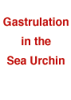

Developmental Mechanisms Problem Set
Problem 2 Tutorial: Events that occur during gastrulation
| What DOES NOT normally happen during gastrulation? |
|
During gastrulation, cells move to new positions and form the germ layers (ectoderm, mesoderm and endoderm) but the embryo does not increase in size. Growth occurs after gastrulation.
In this animation of gastrulation in the sea urchin, notice that although the shape of the gastrula changes, its overall size remains the same. |
 |


Contact the Development Team
http://biology.arizona.edu
All contents copyright © 1996. All rights reserved.